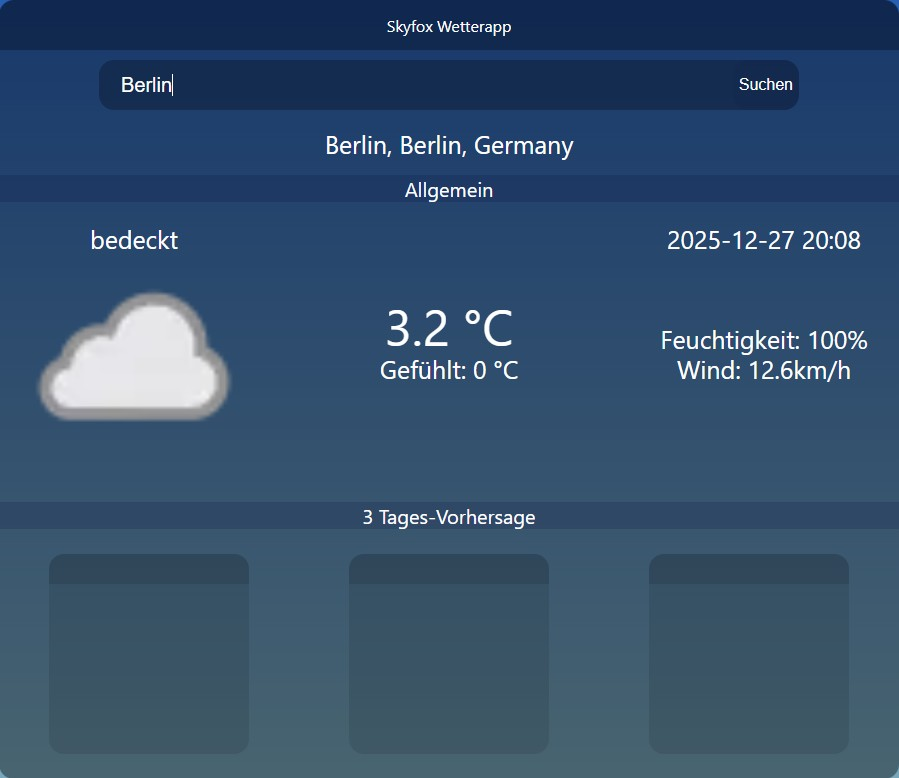
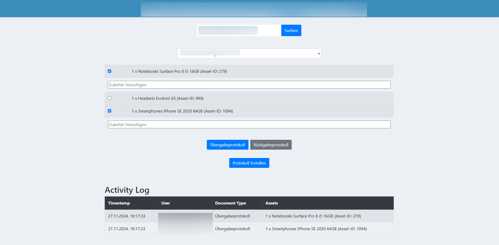

Personal Website
My own personal website. This website uses picocss as it's css framework.
My own personal website. This website uses picocss as it's css framework.
My first actual project, this one was done as a IT-School finals assignment. A simple weatherapp written in Javascript using the OpenWeatherMap-API.
The project I am probably most proud of. This uses the API of a cloud hosted Snipe-IT website, to automatically create signable protocols for newly onboarded people in our company. This helps to save alot of time and work, as previously, these protocols had to be created by hand, and signatures collected physically. Now this is all done via a tablet and archived as a PDF, to be forwarded to accounting.
While I would have loved to share it, this project is private due to it containing, while not as critical, company-internal information. Im just to lazy to create a sanitized version yet.
